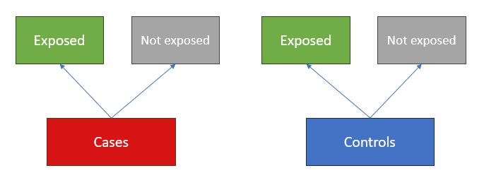

| Smokers | NonSmokers | |
|---|---|---|
| cancer | 83 | 3 |
| control | 72 | 14 |
Inference for relative risk and odds ratios from 2x2 contingency tables
epitools to estimate risk and odds ratios in RResearchers sampled 86 lung cancer patients (cases) and 86 healthy individuals (controls) and recorded smoking status:
| Smokers | NonSmokers | |
|---|---|---|
| cancer | 83 | 3 |
| control | 72 | 14 |
At the 5% level, association is significant:
But there is a difficulty for measuring the association:
Outcome-based sampling limits which proportions are estimable
So due to study design, the only estimable difference in proportions is:
With 95% confidence, the proportion of smokers among cancer patients is estimated to be betwteen 2.9 and 22.7 percentage points higher than among controls.
This makes for an awkward conclusion:
So for this kind of study, we need a different measure of association: odds ratios.
The odds of an outcome measure its relative likelihood
If \(p\) is the true cancer prevalence (a population proportion), then the odds of cancer are defined as the ratio: \[ \text{odds} = \frac{p}{1 - p} \] The odds represent the factor by which cancer is more likely than not, e.g.:
An odds ratio compares the relative likelihood of an outcome between two groups
If \(a, b, c, d\) are population proportions:
| \(\;\) | outcome 1 (O1) | outcome 2 (O2) |
|---|---|---|
| group 1 (G1) | a | b |
| group 2 (G2) | c | d |
The odds ratio of outcome 1 comparing group 1 with group 2 is:
\[ \frac{\text{odds}_{G1}(O1)}{\text{odds}_{G2}(O1)} = \frac{\textcolor{red}{a}/\textcolor{blue}{b}}{\textcolor{orange}{c}/\textcolor{purple}{d}} = \frac{\textcolor{red}{a}\textcolor{purple}{d}}{\textcolor{blue}{b}\textcolor{orange}{c}} \] A surprising algebraic fact is that:
\[ \frac{\text{odds}_{G1}(O1)}{\text{odds}_{G2}(O1)} =\frac{\text{odds}_{O1}(G1)}{\text{odds}_{O2}(G1)} \]
This means that the ratio of odds of cancer between smokers and nonsmokers can be estimated from the ratio of odds of smoking between cases and controls.
For notation let:
| Smokers | NonSmokers | |
|---|---|---|
| cancer | 83 | 3 |
| control | 72 | 14 |
An estimate of ratio of odds of cancer among smokers compared with nonsmokers (\(\omega\)) is the estimated ratio of odds of smoking among cancer patients compared with controls: \[ \hat{\omega} =\left(\frac{\hat{p}_\text{case}}{1 - \hat{p}_\text{case}}\right)\Bigg/\left(\frac{\hat{p}_\text{control}}{1 - \hat{p}_\text{control}}\right) = \frac{83/3}{72/14} = 5.38 \]
It is estimated that the odds of lung cancer are 5.38 times greater for smokers compared with nonsmokers.
The sampling distribution of the log odds ratio can be approximated by a normal model.
\[ \log\left(\hat{\omega}\right) \pm c \times SE\left(\log\left(\hat{\omega}\right)\right) \quad\text{where}\quad SE\left(\log\left(\hat{\omega}\right)\right) = \sqrt{\frac{1}{n_{11}} + \frac{1}{n_{12}} + \frac{1}{n_{21}} + \frac{1}{n_{22}}} \]
The oddsratio(...) function in the epitools package will compute and back-transform the interval for you.
odds ratio with 95% C.I.
estimate lower upper
control 1.00000 NA NA
cancer 5.37963 1.486376 19.47045With 95% confidence, the odds of lung cancer are estimated to be between 1.49 and 19.47 times greater for smokers compared with nonsmokers.
$data
NonSmokers Smokers Total
control 14 72 86
cancer 3 83 86
Total 17 155 172
$measure
odds ratio with 95% C.I.
estimate lower upper
control 1.00000 NA NA
cancer 5.37963 1.486376 19.47045
$p.value
two-sided
midp.exact fisher.exact chi.square
control NA NA NA
cancer 0.005116319 0.008822805 0.01062183oddsratio is picky about data inputs:
outcome of interest should be second column
group of interest should be second row
the rev argument will reverse orders
rev = neither keeps original orientation (default)rev = rows reverses order of rowsrev = columns reverses order of columnsrev = both reverses both$data
NonSmokers Smokers Total
control 14 72 86
cancer 3 83 86
Total 17 155 172
$measure
odds ratio with 95% C.I.
estimate lower upper
control 1.00000 NA NA
cancer 5.37963 1.486376 19.47045
$p.value
two-sided
midp.exact fisher.exact chi.square
control NA NA NA
cancer 0.005116319 0.008822805 0.01062183First report the test result, then the measure of association:
The data provide evidence of an association between smoking and lung cancer (\(\chi^2\) = 6.53 on 1 degree of freedom, p = 0.1062). With 95% confidence, the odds of cancer are estimated to be between 1.49 amd 19.47 times greater among smokers compared with nonsmokers, with a point estimate of 5.38.
Comments:
chi.square \(p\)-value is from the test of association/independencefisher.exact instead (see V&H 8.3.5)Consider estimating the difference in proportions:
| asthma | no asthma | |
|---|---|---|
| female | 49 | 781 |
| male | 30 | 769 |
2-sample test for equality of proportions with continuity correction
data: asthma.tbl
X-squared = 3.6217, df = 1, p-value = 0.05703
alternative hypothesis: two.sided
90 percent confidence interval:
0.002841347 0.040137075
sample estimates:
prop 1 prop 2
0.05903614 0.03754693 With 90% confidence, asthma prevalence is estimated to be between 0.28 and 4.01 percentage points higher among women than among men.
Is a difference of up to 4 percentage points practically meaningful? Well, it depends:
If \(p_F, p_M\) are the (population) proportions of women and men with asthma, then the relative risk of asthma among women compared with men is defined as:
\[ RR = \frac{p_F}{p_M} \qquad \left(\frac{\text{risk among women}}{\text{risk among men}}\right) \]
An estimate of the relative risk is simply the ratio of estimated proportions. For the asthma data, an estimate is: \[ \widehat{RR} = \frac{\hat{p}_F}{\hat{p}_M} = \frac{0.059}{0.038} = 1.57 \]
It is estimated that the risk of asthma among women is 1.57 times greater than among men.
A normal model can be used to approximate the sampling distribution of \(\log(RR)\) and construct a confidence interval. If \(\hat{p}_1\) and \(\hat{p}_2\) are the two estimated proportions:
\[\log\left(\widehat{RR}\right) \pm c \times SE\left(\log\left(\widehat{RR}\right)\right) \quad\text{where}\quad SE\left(\log\left(\widehat{RR}\right)\right) = \sqrt{\frac{1 - p_1}{p_1n_1} + \frac{1 - p_2}{p_2n_2}}\]
The riskratio(...) function from the epitools package will compute and back-transform the interval for you:
risk ratio with 90% C.I.
estimate lower upper
male 1.000000 NA NA
female 1.572329 1.083353 2.282007With 90% confidence, the risk of asthma is estimated to be betwen 1.08 and 2.28 times greater for women than for men, with a point estimate of 1.57.
$data
no asthma asthma Total
male 769 30 799
female 781 49 830
Total 1550 79 1629
$measure
risk ratio with 90% C.I.
estimate lower upper
male 1.000000 NA NA
female 1.572329 1.083353 2.282007
$p.value
two-sided
midp.exact fisher.exact chi.square
male NA NA NA
female 0.04412095 0.04961711 0.05703135Implementation is identical to oddsratio:
revAlso similarly:
chi.square gives the \(p\)-value for the \(\chi^2\) test of associationfisher.exact gives an exact p-value you can use if assumptions aren’t met$data
no asthma asthma Total
male 769 30 799
female 781 49 830
Total 1550 79 1629
$measure
risk ratio with 90% C.I.
estimate lower upper
male 1.000000 NA NA
female 1.572329 1.083353 2.282007
$p.value
two-sided
midp.exact fisher.exact chi.square
male NA NA NA
female 0.04412095 0.04961711 0.05703135First report the test result, then the measure of association:
The data provide evidence at the 10% significance level of an association between asthma and sex (\(\chi^2\) = 3.62 on 1 degree of freedom, p = 0.057). With 90% confidence, the risk of asthma is estimated to be betwen 1.08 and 2.28 times greater for women than for men, with a point estimate of 1.57.
Comments:
chi.square \(p\)-value is from the test of association/independencefisher.exact insteadAn outbreak of cyclosporiasis was detected among residents of New Jersey. In a case-control study, investigators found that 21 of 30 case-patients and 4 of 60 controls had eaten raspberries.
| raspberries | no raspberries | |
|---|---|---|
| case | 21 | 9 |
| control | 4 | 56 |
cyclosporiasis
raspberries case control
raspberries 8.333333 16.66667
no raspberries 21.666667 43.33333$measure
odds ratio with 95% C.I.
raspberries estimate lower upper
no raspberries 1.00000 NA NA
raspberries 32.66667 9.081425 117.5048
$p.value
two-sided
raspberries midp.exact fisher.exact chi.square
no raspberries NA NA NA
raspberries 6.358611e-10 6.183017e-10 1.247883e-09The data provide very strong evidence of an association between eating raspberries during the outbreak and case incidence (\(\chi^2\) = 36.89 on 1 degree of freedom, p < 0.0001). With 95% confidence, the odds of indcidence are estimated to be between 9.08 and 117.5 times higher among NJ residents who ate raspberries during the outbreak.
A cohort study of 3,000 smokers and 5,000 nonsmokers investigated the link between smoking and the development of coronary heart disease (CHD) over 1 year.
| CHD | no CHD | |
|---|---|---|
| smoker | 84 | 2916 |
| nonsmoker | 87 | 4913 |
chd
smoker CHD no CHD
smoker 64.125 2935.875
nonsmoker 106.875 4893.125$measure
risk ratio with 95% C.I.
smoker estimate lower upper
nonsmoker 1.000000 NA NA
smoker 1.609195 1.196452 2.164325
$p.value
two-sided
smoker midp.exact fisher.exact chi.square
nonsmoker NA NA NA
smoker 0.001799736 0.001800482 0.001976694The data provide very strong evidence that smoking is associated with coronary heart disease (\(\chi^2\) = 9.5711 on 1 degree of freedom, p = 0.00198). With 95% confidence, the risk of CHD is estimated to be between 1.196 and 2.164 times greater among smokers compared with nonsmokers, with a point estimate of 1.609.
In a randomized trial for a malaria vaccine, 20 individuals were randomly allocated to receive a dose of the vaccine or a placebo.
| infection | no infection | |
|---|---|---|
| placebo | 6 | 0 |
| vaccine | 5 | 9 |
outcome
treatment infection no infection
placebo 3.3 2.7
vaccine 7.7 6.3$measure
risk ratio with 95% C.I.
treatment estimate lower upper
placebo 1.0000000 NA NA
vaccine 0.3571429 0.1768593 0.7212006
$p.value
two-sided
treatment midp.exact fisher.exact chi.square
placebo NA NA NA
vaccine 0.0119195 0.01408669 0.03094368The data provide moderate evidence that the malaria vaccine is effective (Fisher’s exact test, p = 0.0141).
A twist: how to interpret the CI? Answer: \(\text{efficacy = 1 - RR}\)
With 95% confidence, the risk of infection is estimated to be between 27.88% and 82.31% lower among vaccinated individuals, with a point estimate of 64.29% efficacy.
STAT218